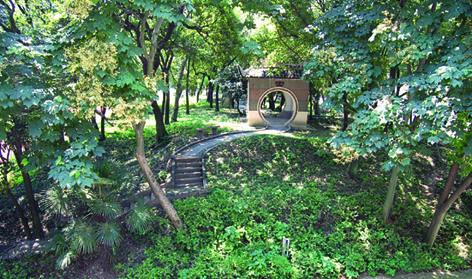

嘉兴市文物保护网 · 市级文物保护单位 · 2014-06-13 · 原文

严助墓位于嘉兴市南湖区建设街道瓶山社区辅成小学内，是西汉名士严助的坟茔。严助（？～前112）西汉会稽郡吴县人，本名严庄助，辞赋家，富文采，擅辞赋，官至会稽太守。墓呈圆形，面积2157平方米，周长174米。墓丘上草木茂盛，郁郁葱葱，环境幽静。墓穴、墓碑已无存。据嘉兴人庞艺影《话说严助》一文考证，此墓的真实性尚且存疑。该墓历史悠久，为研究严助及当地古代葬俗提供了实物资料，具有较高的历史价值。1992年公布为嘉兴市级文物保护单位。